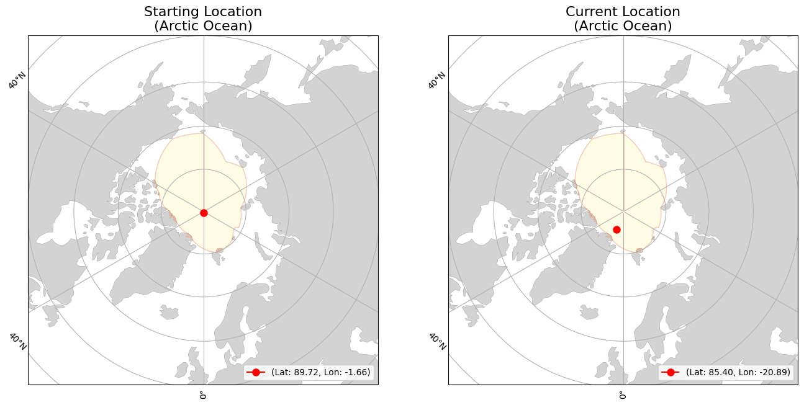

<div><div><b>Buoy Starting and Current Locations</b></div></div>
<div><div><b>Buoy Movement over Time</b></div></div>
<iframe src="300534066614760_movement.html" width="1000" height="1000" style="border:none;"></iframe>
<div>                        <script type="text/javascript">window.PlotlyConfig = {MathJaxConfig: 'local'};</script>
        <script charset="utf-8" src="https://cdn.plot.ly/plotly-2.35.2.min.js"></script>                <div id="dcc39a46-7e1a-4ed4-812a-cd02d97f07de" class="plotly-graph-div" style="height:600px; width:1000px;"></div>            <script type="text/javascript">                                    window.PLOTLYENV=window.PLOTLYENV || {};                                    if (document.getElementById("dcc39a46-7e1a-4ed4-812a-cd02d97f07de")) {                    Plotly.newPlot(                        "dcc39a46-7e1a-4ed4-812a-cd02d97f07de",                        [{"hovertemplate":"Date=%{x}\u003cbr\u003etotal_distance_km=%{y}\u003cextra\u003e\u003c\u002fextra\u003e","legendgroup":"","line":{"color":"#636efa","dash":"solid"},"marker":{"symbol":"circle"},"mode":"lines","name":"","orientation":"v","showlegend":false,"x":["2024-09-17","2024-09-18","2024-09-19","2024-09-20","2024-09-21","2024-09-22","2024-09-23","2024-09-24","2024-09-25","2024-09-26","2024-09-27","2024-09-28","2024-09-29","2024-09-30","2024-10-01","2024-10-02","2024-10-03","2024-10-04","2024-10-05","2024-10-06","2024-10-07","2024-10-08","2024-10-09","2024-10-10","2024-10-11","2024-10-12","2024-10-13","2024-10-14","2024-10-15","2024-10-16","2024-10-17","2024-10-18","2024-10-19","2024-10-20","2024-10-21","2024-10-22","2024-10-23","2024-10-24","2024-10-25","2024-10-26","2024-10-27","2024-10-28","2024-10-29","2024-10-30","2024-10-31","2024-11-01","2024-11-02","2024-11-03","2024-11-04","2024-11-05","2024-11-06","2024-11-07","2024-11-08","2024-11-09","2024-11-10","2024-11-11","2024-11-12","2024-11-13","2024-11-14","2024-11-15","2024-11-16","2024-11-17","2024-11-18","2024-11-19","2024-11-20","2024-11-21","2024-11-22","2024-11-23","2024-11-24","2024-11-25","2024-11-26","2024-11-27","2024-11-28","2024-11-29","2024-11-30","2024-12-01","2024-12-02","2024-12-03","2024-12-04","2024-12-05","2024-12-06","2024-12-07","2024-12-08","2024-12-09","2024-12-10","2024-12-11","2024-12-12","2024-12-13","2024-12-14","2024-12-15","2024-12-16","2024-12-17","2024-12-18","2024-12-19","2024-12-20","2024-12-21","2024-12-22","2024-12-23","2024-12-24","2024-12-25","2024-12-26"],"xaxis":"x","y":[0.8845397598847666,1.0704968564929607,4.339577139349254,10.802097995015238,7.306659345834377,4.221608101730474,6.875799254948621,9.032141540012152,5.296210038338881,7.273483503982812,7.92830392327532,5.5302831535125705,9.69493115610998,10.000522918928482,12.84835656765709,8.99635902281851,9.204251406234114,6.797063871197184,15.16803289033556,3.565197633251152,9.302182129099709,8.321144423956817,5.773723622624003,4.67734928612074,5.505177713303749,6.5508875132779485,3.77627990130283,3.929528694968437,10.061735114709913,10.50003989049588,5.811450762123225,9.361956876912204,5.1916165323929375,5.621381554679793,6.54063166351009,3.336613444457487,10.522177952849502,7.5935292857771675,9.123355147489423,9.186038700269423,7.001608353572133,5.775794782761071,15.346775430080216,17.746475997535548,10.828031230598699,6.617756901181147,15.573128484006713,14.901775391090608,13.95638155837742,14.944905005117333,7.95530835613647,6.790812660687257,8.111978299619492,10.11786167703367,16.229935675375692,11.273159172773845,22.847862894042887,18.78383754403559,12.431233169442853,8.104295894408008,5.3956745931072705,3.375873662746463,2.1417214142510512,7.642168241017963,14.579974390648731,20.794756360929536,15.064670260471248,15.345897249061629,10.92979749411979,10.282702966591392,7.619963413233196,16.304047486040464,10.45011637427849,5.538009089483338,10.959639673565722,8.575605891659068,9.72975211773467,11.075707981353244,7.727961588077513,5.6773038966860385,6.905554767358767,7.164778583180162,3.7958120896950858,3.562042120840608,8.563685663941564,12.477433613143733,7.173348444274799,14.48071754449718,2.509903062834245,13.73960301080791,4.692798592811407,0.7596695001389723,7.878538835206552,6.0904500378943665,4.707025863430909,4.931961978816438,10.848804979757672,5.454201167922739,4.208970893069713,10.692394894963279,6.787438248603953],"yaxis":"y","type":"scatter"}],                        {"template":{"data":{"histogram2dcontour":[{"type":"histogram2dcontour","colorbar":{"outlinewidth":0,"ticks":""},"colorscale":[[0.0,"#0d0887"],[0.1111111111111111,"#46039f"],[0.2222222222222222,"#7201a8"],[0.3333333333333333,"#9c179e"],[0.4444444444444444,"#bd3786"],[0.5555555555555556,"#d8576b"],[0.6666666666666666,"#ed7953"],[0.7777777777777778,"#fb9f3a"],[0.8888888888888888,"#fdca26"],[1.0,"#f0f921"]]}],"choropleth":[{"type":"choropleth","colorbar":{"outlinewidth":0,"ticks":""}}],"histogram2d":[{"type":"histogram2d","colorbar":{"outlinewidth":0,"ticks":""},"colorscale":[[0.0,"#0d0887"],[0.1111111111111111,"#46039f"],[0.2222222222222222,"#7201a8"],[0.3333333333333333,"#9c179e"],[0.4444444444444444,"#bd3786"],[0.5555555555555556,"#d8576b"],[0.6666666666666666,"#ed7953"],[0.7777777777777778,"#fb9f3a"],[0.8888888888888888,"#fdca26"],[1.0,"#f0f921"]]}],"heatmap":[{"type":"heatmap","colorbar":{"outlinewidth":0,"ticks":""},"colorscale":[[0.0,"#0d0887"],[0.1111111111111111,"#46039f"],[0.2222222222222222,"#7201a8"],[0.3333333333333333,"#9c179e"],[0.4444444444444444,"#bd3786"],[0.5555555555555556,"#d8576b"],[0.6666666666666666,"#ed7953"],[0.7777777777777778,"#fb9f3a"],[0.8888888888888888,"#fdca26"],[1.0,"#f0f921"]]}],"heatmapgl":[{"type":"heatmapgl","colorbar":{"outlinewidth":0,"ticks":""},"colorscale":[[0.0,"#0d0887"],[0.1111111111111111,"#46039f"],[0.2222222222222222,"#7201a8"],[0.3333333333333333,"#9c179e"],[0.4444444444444444,"#bd3786"],[0.5555555555555556,"#d8576b"],[0.6666666666666666,"#ed7953"],[0.7777777777777778,"#fb9f3a"],[0.8888888888888888,"#fdca26"],[1.0,"#f0f921"]]}],"contourcarpet":[{"type":"contourcarpet","colorbar":{"outlinewidth":0,"ticks":""}}],"contour":[{"type":"contour","colorbar":{"outlinewidth":0,"ticks":""},"colorscale":[[0.0,"#0d0887"],[0.1111111111111111,"#46039f"],[0.2222222222222222,"#7201a8"],[0.3333333333333333,"#9c179e"],[0.4444444444444444,"#bd3786"],[0.5555555555555556,"#d8576b"],[0.6666666666666666,"#ed7953"],[0.7777777777777778,"#fb9f3a"],[0.8888888888888888,"#fdca26"],[1.0,"#f0f921"]]}],"surface":[{"type":"surface","colorbar":{"outlinewidth":0,"ticks":""},"colorscale":[[0.0,"#0d0887"],[0.1111111111111111,"#46039f"],[0.2222222222222222,"#7201a8"],[0.3333333333333333,"#9c179e"],[0.4444444444444444,"#bd3786"],[0.5555555555555556,"#d8576b"],[0.6666666666666666,"#ed7953"],[0.7777777777777778,"#fb9f3a"],[0.8888888888888888,"#fdca26"],[1.0,"#f0f921"]]}],"mesh3d":[{"type":"mesh3d","colorbar":{"outlinewidth":0,"ticks":""}}],"scatter":[{"fillpattern":{"fillmode":"overlay","size":10,"solidity":0.2},"type":"scatter"}],"parcoords":[{"type":"parcoords","line":{"colorbar":{"outlinewidth":0,"ticks":""}}}],"scatterpolargl":[{"type":"scatterpolargl","marker":{"colorbar":{"outlinewidth":0,"ticks":""}}}],"bar":[{"error_x":{"color":"#2a3f5f"},"error_y":{"color":"#2a3f5f"},"marker":{"line":{"color":"#E5ECF6","width":0.5},"pattern":{"fillmode":"overlay","size":10,"solidity":0.2}},"type":"bar"}],"scattergeo":[{"type":"scattergeo","marker":{"colorbar":{"outlinewidth":0,"ticks":""}}}],"scatterpolar":[{"type":"scatterpolar","marker":{"colorbar":{"outlinewidth":0,"ticks":""}}}],"histogram":[{"marker":{"pattern":{"fillmode":"overlay","size":10,"solidity":0.2}},"type":"histogram"}],"scattergl":[{"type":"scattergl","marker":{"colorbar":{"outlinewidth":0,"ticks":""}}}],"scatter3d":[{"type":"scatter3d","line":{"colorbar":{"outlinewidth":0,"ticks":""}},"marker":{"colorbar":{"outlinewidth":0,"ticks":""}}}],"scattermapbox":[{"type":"scattermapbox","marker":{"colorbar":{"outlinewidth":0,"ticks":""}}}],"scatterternary":[{"type":"scatterternary","marker":{"colorbar":{"outlinewidth":0,"ticks":""}}}],"scattercarpet":[{"type":"scattercarpet","marker":{"colorbar":{"outlinewidth":0,"ticks":""}}}],"carpet":[{"aaxis":{"endlinecolor":"#2a3f5f","gridcolor":"white","linecolor":"white","minorgridcolor":"white","startlinecolor":"#2a3f5f"},"baxis":{"endlinecolor":"#2a3f5f","gridcolor":"white","linecolor":"white","minorgridcolor":"white","startlinecolor":"#2a3f5f"},"type":"carpet"}],"table":[{"cells":{"fill":{"color":"#EBF0F8"},"line":{"color":"white"}},"header":{"fill":{"color":"#C8D4E3"},"line":{"color":"white"}},"type":"table"}],"barpolar":[{"marker":{"line":{"color":"#E5ECF6","width":0.5},"pattern":{"fillmode":"overlay","size":10,"solidity":0.2}},"type":"barpolar"}],"pie":[{"automargin":true,"type":"pie"}]},"layout":{"autotypenumbers":"strict","colorway":["#636efa","#EF553B","#00cc96","#ab63fa","#FFA15A","#19d3f3","#FF6692","#B6E880","#FF97FF","#FECB52"],"font":{"color":"#2a3f5f"},"hovermode":"closest","hoverlabel":{"align":"left"},"paper_bgcolor":"white","plot_bgcolor":"#E5ECF6","polar":{"bgcolor":"#E5ECF6","angularaxis":{"gridcolor":"white","linecolor":"white","ticks":""},"radialaxis":{"gridcolor":"white","linecolor":"white","ticks":""}},"ternary":{"bgcolor":"#E5ECF6","aaxis":{"gridcolor":"white","linecolor":"white","ticks":""},"baxis":{"gridcolor":"white","linecolor":"white","ticks":""},"caxis":{"gridcolor":"white","linecolor":"white","ticks":""}},"coloraxis":{"colorbar":{"outlinewidth":0,"ticks":""}},"colorscale":{"sequential":[[0.0,"#0d0887"],[0.1111111111111111,"#46039f"],[0.2222222222222222,"#7201a8"],[0.3333333333333333,"#9c179e"],[0.4444444444444444,"#bd3786"],[0.5555555555555556,"#d8576b"],[0.6666666666666666,"#ed7953"],[0.7777777777777778,"#fb9f3a"],[0.8888888888888888,"#fdca26"],[1.0,"#f0f921"]],"sequentialminus":[[0.0,"#0d0887"],[0.1111111111111111,"#46039f"],[0.2222222222222222,"#7201a8"],[0.3333333333333333,"#9c179e"],[0.4444444444444444,"#bd3786"],[0.5555555555555556,"#d8576b"],[0.6666666666666666,"#ed7953"],[0.7777777777777778,"#fb9f3a"],[0.8888888888888888,"#fdca26"],[1.0,"#f0f921"]],"diverging":[[0,"#8e0152"],[0.1,"#c51b7d"],[0.2,"#de77ae"],[0.3,"#f1b6da"],[0.4,"#fde0ef"],[0.5,"#f7f7f7"],[0.6,"#e6f5d0"],[0.7,"#b8e186"],[0.8,"#7fbc41"],[0.9,"#4d9221"],[1,"#276419"]]},"xaxis":{"gridcolor":"white","linecolor":"white","ticks":"","title":{"standoff":15},"zerolinecolor":"white","automargin":true,"zerolinewidth":2},"yaxis":{"gridcolor":"white","linecolor":"white","ticks":"","title":{"standoff":15},"zerolinecolor":"white","automargin":true,"zerolinewidth":2},"scene":{"xaxis":{"backgroundcolor":"#E5ECF6","gridcolor":"white","linecolor":"white","showbackground":true,"ticks":"","zerolinecolor":"white","gridwidth":2},"yaxis":{"backgroundcolor":"#E5ECF6","gridcolor":"white","linecolor":"white","showbackground":true,"ticks":"","zerolinecolor":"white","gridwidth":2},"zaxis":{"backgroundcolor":"#E5ECF6","gridcolor":"white","linecolor":"white","showbackground":true,"ticks":"","zerolinecolor":"white","gridwidth":2}},"shapedefaults":{"line":{"color":"#2a3f5f"}},"annotationdefaults":{"arrowcolor":"#2a3f5f","arrowhead":0,"arrowwidth":1},"geo":{"bgcolor":"white","landcolor":"#E5ECF6","subunitcolor":"white","showland":true,"showlakes":true,"lakecolor":"white"},"title":{"x":0.05},"mapbox":{"style":"light"}}},"xaxis":{"anchor":"y","domain":[0.0,1.0],"title":{"text":"Date"},"tickangle":45},"yaxis":{"anchor":"x","domain":[0.0,1.0],"title":{"text":"total_distance_km"}},"legend":{"tracegroupgap":0},"margin":{"t":60},"title":{"text":"Total Distance Traveled over Time","font":{"size":16},"x":0.5},"height":600,"width":1000},                        {"responsive": true}                    )                };                            </script>        </div>